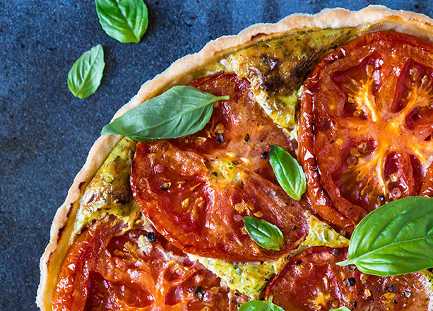

Plat du Jour
Recettes
Catégories
Articles
About us
Anti-Gaspi
Poke bowl aux restes de riz

Tarte aux tomates abîmées
Croquettes de légumes
Croque monsieur aux restes de jambon
Salade césar aux restes de poulet